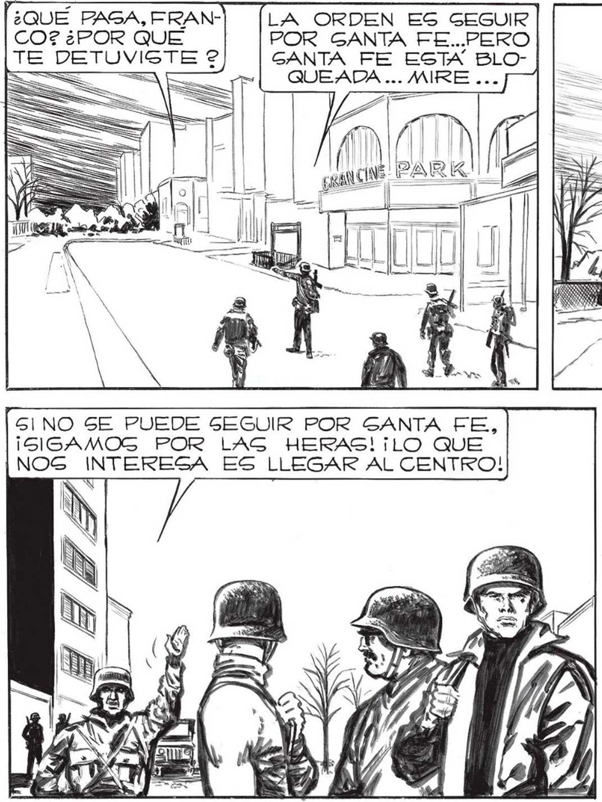
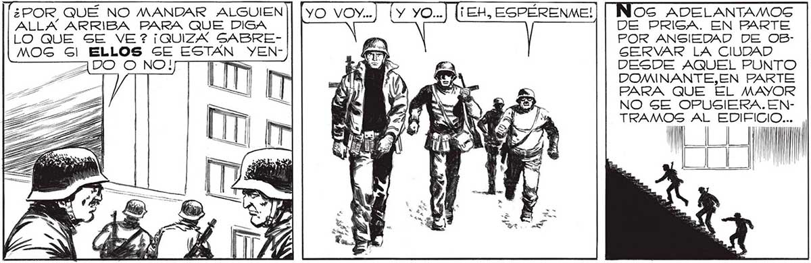

l¿QUÉ PAGA, FRAN] [LA ORDEN ES GEGUIR IMPOSIBLE SEGUIR, TAM- 'LA ÚNICA QUE QUE- EG, <A pal 195 CO? ¿POR QUE POR GANTA FE...PERO BIÉN GERRANO ESTA DA LIBRE ES LA CA- PR GA 2 BLOQUEADA. Y LA AVE- LLE LAS HERAS. e > yl TE DETUVIGTE ?2 GANTA FE ESTA BLO== = : QUEADA ... MIRE ... ; ' y A USES, l, pe > a e SS e ? ]NIDA SARMIENTO... Ñ = ais LS $ ua o MINA ¡NN ! o cgsucinó Pe ¡MA h “EN PO GINO SE PUEDE SEGUIR POR GANTA FE, ¡SIGAMOG POR LAG HERAS! ¡LO QUE NOG INTERESA ES LLEGAR AL CENTRO! ME OPONGO A QUE SIGAMOS, MAYOR. ESTAMOS HACIENDO DEMASIADO DOCILMENTE EL JUEGO AL ENEMIGO. ¿POR QUÉ BLOQUEARON TODAS LAS CALLES MENOS LAS ¿POR QUÉ NO MANDAR ALGUIEN has OG ADELANTAMOSG ALLA ARRIBA PARA QUE DIGA DE PRISA. EN PARTE LOQUE SE VE? ¡QUIZA SABRE- 77 POR ANSIEDAD DE OBMOG Gl ELLOS SE ESTAN YEN- i GERVAR LA CIUDAD = DESDE AQUEL PUNTO DOMINANTE,EN PARTE PARA QUE EL MAYOR NO SE OPUSIERA.ENTRAMOS AL EDIFICIO... Y NO CON MUCHO ALIENTO, LLEGA" MOG AL VIGESIMO QUINTO PIGO. | DESDE AQUÍ SE VE LA CIUDAD TODA va. Y... M0

